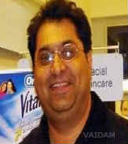

Dr. Ashish Kakkar
QUALIFICATIONS
.
ABOUT DOCTOR
Dr. Ashish Kakkar is a dental surgeon of high repute, practicing successfully for 25+ years.
He offers a host of treatments related to teeth and gum ailments.
He is the Founder President of the Academy of Oral Implantology.
Dr. Kakkar is a member of a number of institutions such as American Dental Association, International Congress of Oral Implantology, American Association of Dental Research, Indian Society of Oral Implantologists, Indian Dental Association, Indian Prosthodontic Society, Indian Endodontic Society and Indian Academy of Osseointegration of which he is a Founder Member.
He completed BDS from the University of Delhi and then did his MDS.
SPECIALIZATION :
Restorative Dentistry,
Implantation,
Gum Related Ailment,
Teeth Whitening,
Teeth Reshaping,
Cosmetic/Aesthetic Dentistry.
WORK EXPERIENCE
Consultant, Indraprastha Apollo Hospital, New Delhi